פשוט להצליח במתמטיקה › בחינות בגרות › שאלון 35471 › קיץ מועד ב 2023
בגרות 35471 – קיץ מועד ב 2023
בחינת הבגרות במתמטיקה 35471 (4 יח״ל, שאלון ראשון, כיתה י״א) – קיץ מועד ב 2023 תשפ״ג. כאן השאלון המקורי והפתרון הרשמי של משרד החינוך, וסרטוני הסבר על הנושאים שמופיעים בשאלון.
סרטוני הסבר לפי הנושאים בשאלון 35471
פרק א — סטטיסטיקה והסתברות עצים, טבלאות, מותנה, התפלגות נורמלית, רגרסיה
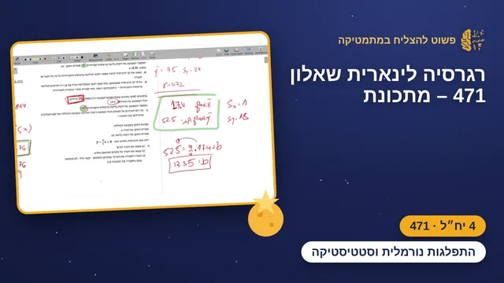
רגרסיה לינארית שאלון 471 – מתכונת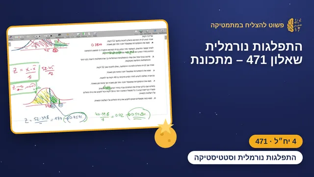
התפלגות נורמלית שאלון 471 – מתכונתהסתברות שאלון 471 – מתכונת התפלגות נורמלית שאלות בגרות 4 יח שאלון 471 2
התפלגות נורמלית שאלות בגרות 4 יח שאלון 471 2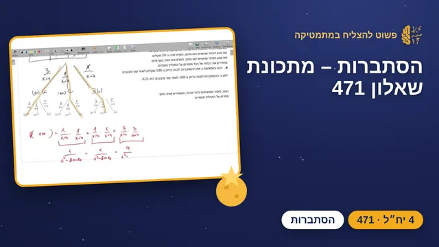
הסתברות – מתכונת שאלון 471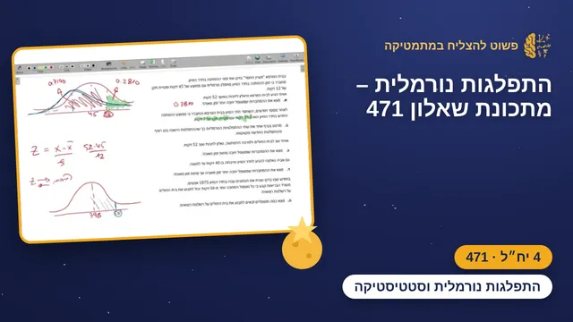
התפלגות נורמלית – מתכונת שאלון 471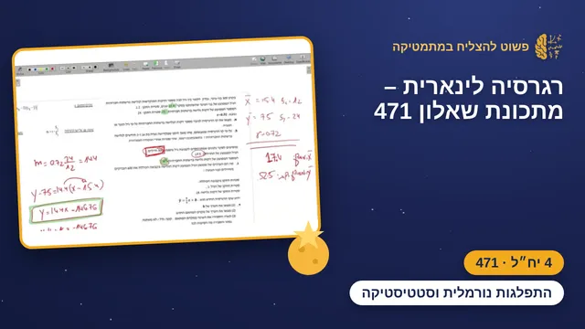
רגרסיה לינארית – מתכונת שאלון 471 שאלות בגרות בהסתברות שאלון 471 4 יח 1
שאלות בגרות בהסתברות שאלון 471 4 יח 1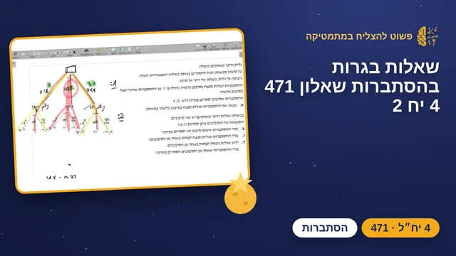
שאלות בגרות בהסתברות שאלון 471 4 יח 2 הסתברות שאלת בגרות 471 – חלום של שאלה
הסתברות שאלת בגרות 471 – חלום של שאלה שאלת בגרות הסתברות שאלון 471 4 יח
שאלת בגרות הסתברות שאלון 471 4 יח התפלגות 471 מדהים ומרגש
התפלגות 471 מדהים ומרגש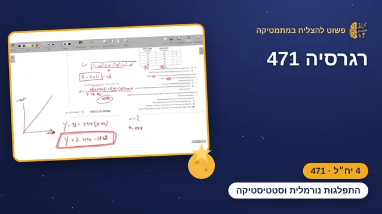
רגרסיה 471הסתברות עץ וואו 471 הסבר מהות הסתברות שאלון 471
הסבר מהות הסתברות שאלון 471 התפלגות נורמלית – בסיס הרעיון והסבר הנוסחה שאלון 471 1
התפלגות נורמלית – בסיס הרעיון והסבר הנוסחה שאלון 471 1 התפלגות נורמלית – בסיס הרעיון והסבר הנוסחה שאלון 471 4
התפלגות נורמלית – בסיס הרעיון והסבר הנוסחה שאלון 471 4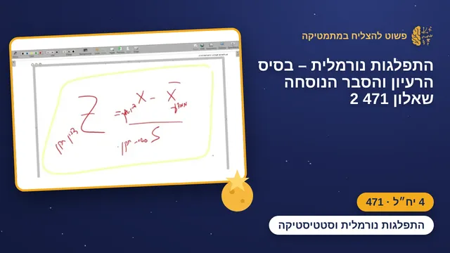
התפלגות נורמלית – בסיס הרעיון והסבר הנוסחה שאלון 471 2 התפלגות נורמלית – בסיס הרעיון והסבר הנוסחה שאלון 471 3התפלגות נורמלית – בסיס הרעיון והסבר הנוסחה שאלון 471 5
התפלגות נורמלית – בסיס הרעיון והסבר הנוסחה שאלון 471 3התפלגות נורמלית – בסיס הרעיון והסבר הנוסחה שאלון 471 5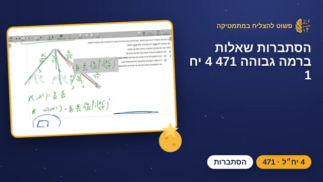
הסתברות שאלות ברמה גבוהה 471 4 יח 1 הסתברות שאלות ברמה גבוהה 471 4 יח 2
הסתברות שאלות ברמה גבוהה 471 4 יח 2 טבלה עם עץ הסתברות – שאלה טילית שאלון 471הסתברות טבלה עם מותנה – רמה גבוהה ביותר 471
טבלה עם עץ הסתברות – שאלה טילית שאלון 471הסתברות טבלה עם מותנה – רמה גבוהה ביותר 471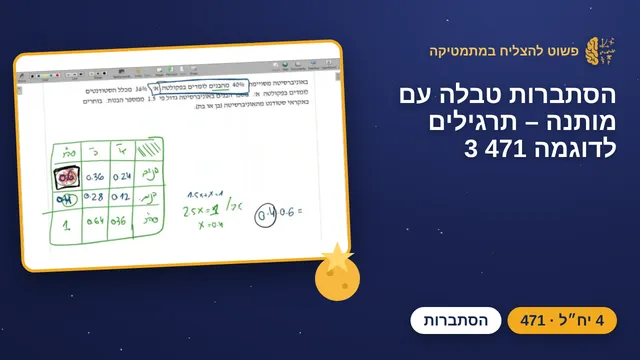
הסתברות טבלה עם מותנה – תרגילים לדוגמה 471 3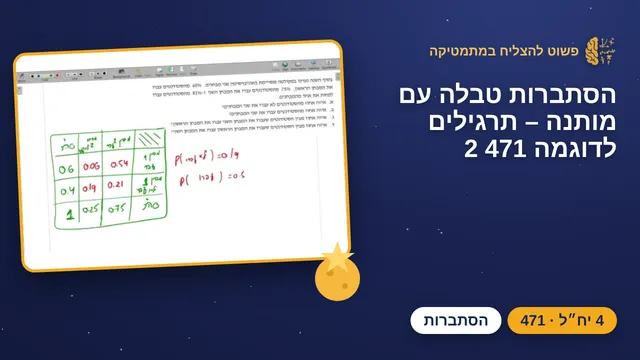
הסתברות טבלה עם מותנה – תרגילים לדוגמה 471 2 הסתברות טבלה עם מותנה – תרגילים לדוגמה 471 1
הסתברות טבלה עם מותנה – תרגילים לדוגמה 471 1 הסתברות עץ עם נעלם וללא החזרה 471 4 יח
הסתברות עץ עם נעלם וללא החזרה 471 4 יח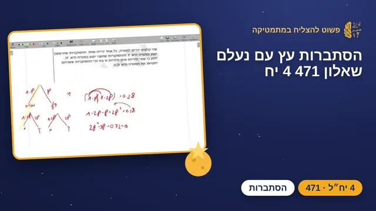
הסתברות עץ עם נעלם שאלון 471 4 יח הסתברות דיאגרמת עץ – שאלה מדהימה 4 יח שאלון 471הקונספט של נעלם בהסתברות שאלון 471
הסתברות דיאגרמת עץ – שאלה מדהימה 4 יח שאלון 471הקונספט של נעלם בהסתברות שאלון 471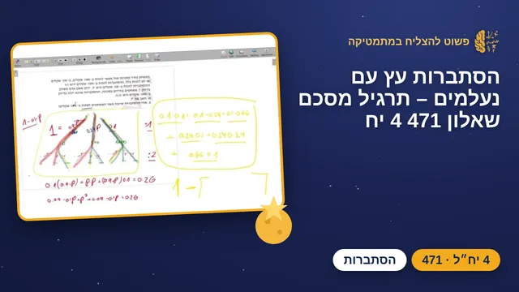
הסתברות עץ עם נעלמים – תרגיל מסכם שאלון 471 4 יח עוד תרגיל הסתברות ללא החזרה שאלון 471
עוד תרגיל הסתברות ללא החזרה שאלון 471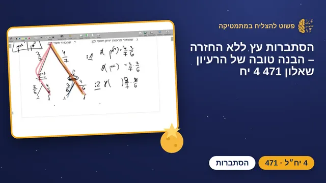
הסתברות עץ ללא החזרה – הבנה טובה של הרעיון שאלון 471 4 יח הסתברות רצף אירועים – הבסיס והרעיון שאלון 471 4 יח
הסתברות רצף אירועים – הבסיס והרעיון שאלון 471 4 יח מאורע משלים – לחשב הסתברות דרך מה שאנחנו לא רוצים 471 4 יח
מאורע משלים – לחשב הסתברות דרך מה שאנחנו לא רוצים 471 4 יח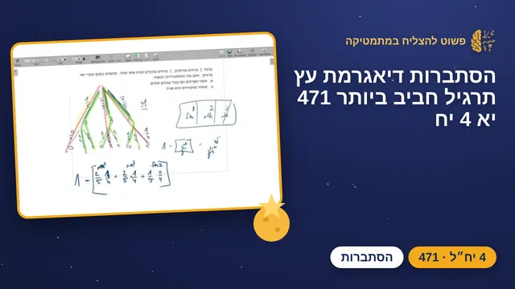
הסתברות דיאגרמת עץ תרגיל חביב ביותר 471 יא 4 יח הסתברות דיאגרמת עץ – השתלשלות אירועים כיתה יא 471 4 יח
הסתברות דיאגרמת עץ – השתלשלות אירועים כיתה יא 471 4 יח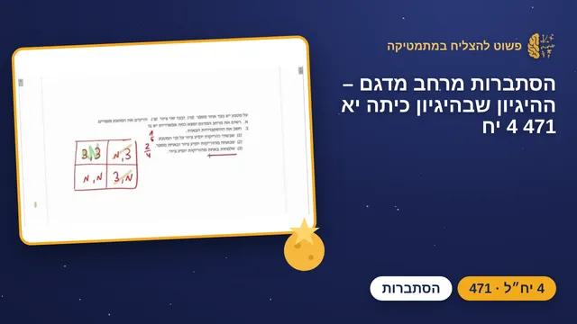
הסתברות מרחב מדגם – ההיגיון שבהיגיון כיתה יא 471 4 יח הסתברות – מהות ומשמעות כולל תרגילי התחלה כיתה יא 471 4 יח
הסתברות – מהות ומשמעות כולל תרגילי התחלה כיתה יא 471 4 יח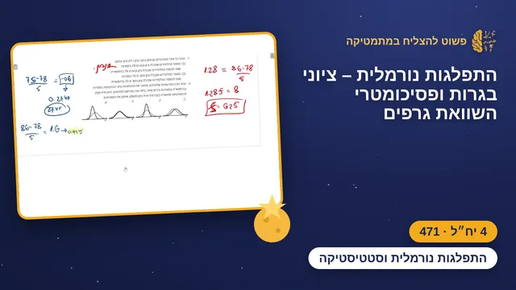
התפלגות נורמלית – ציוני בגרות ופסיכומטרי השוואת גרפים הסתברות עץ וטבלה – שאלות בגרות וחזרה על כל החומר
הסתברות עץ וטבלה – שאלות בגרות וחזרה על כל החומר הסתברות עץ וטבלה כולל מותנה ושאלות בגרות – הסבר כל החומר
הסתברות עץ וטבלה כולל מותנה ושאלות בגרות – הסבר כל החומר הסתברות – כפתורים בקופסה, דנה ורותי (עץ ומותנה)
הסתברות – כפתורים בקופסה, דנה ורותי (עץ ומותנה) הסתברות בטבלה עם מותנה – כנס שוטרים, שופטים ועורכי דין
הסתברות בטבלה עם מותנה – כנס שוטרים, שופטים ועורכי דין הסתברות מותנית בטבלה – סקר הפסקת צהריים (שנה א׳ ושנה ב׳)
הסתברות מותנית בטבלה – סקר הפסקת צהריים (שנה א׳ ושנה ב׳) הסתברות עץ – פירות משתי מגירות והסתברות מותנית
הסתברות עץ – פירות משתי מגירות והסתברות מותנית הסתברות בטבלה עם מותנה 4-5 יח – תרגיל
הסתברות בטבלה עם מותנה 4-5 יח – תרגיל הסתברות עץ 4-5 יח בסיסי – חלק 2
הסתברות עץ 4-5 יח בסיסי – חלק 2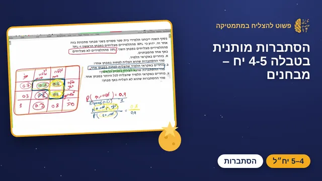
הסתברות מותנית בטבלה 4-5 יח – מבחנים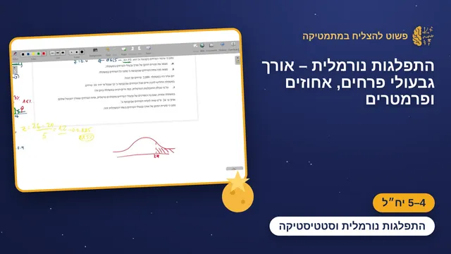
התפלגות נורמלית – אורך גבעולי פרחים, אחוזים ופרמטרים הסתברות בטבלה דו-ממדית – רישיון נהיגה בשכבה
הסתברות בטבלה דו-ממדית – רישיון נהיגה בשכבה הסתברות בטבלה – מנוי לנטפליקס בשכבה
הסתברות בטבלה – מנוי לנטפליקס בשכבה הסתברות בטבלה – מתנדבים בשכבות י״א-י״ב
הסתברות בטבלה – מתנדבים בשכבות י״א-י״ב הסתברות בטבלה – דירה ומכונית, מבחנים באוניברסיטה
הסתברות בטבלה – דירה ומכונית, מבחנים באוניברסיטה התפלגות נורמלית – אורך חיי טלפונים סלולריים
התפלגות נורמלית – אורך חיי טלפונים סלולריים הסתברות בטבלה – דירות בבניין, כיוון ומשופצות
הסתברות בטבלה – דירות בבניין, כיוון ומשופצות מתאם וקו רגרסיה – חישוב r ומשוואת הישר
מתאם וקו רגרסיה – חישוב r ומשוואת הישר התפלגות נורמלית – משקלי תינוקות
התפלגות נורמלית – משקלי תינוקות התפלגות נורמלית – זמן חנייה בחניון
התפלגות נורמלית – זמן חנייה בחניוןפרק ב — גאומטריה גאומטריה עם אנליטית וטריגונומטריה, מעגל, דמיון
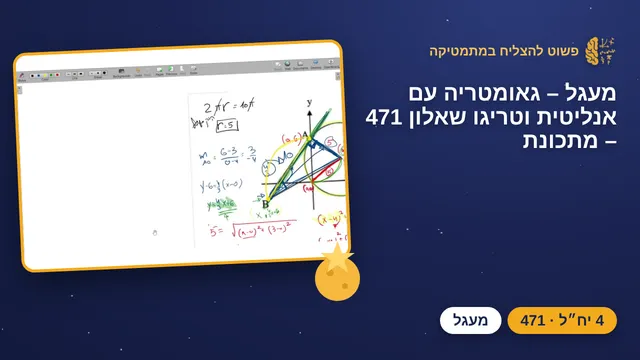
מעגל – גאומטריה עם אנליטית וטריגו שאלון 471 – מתכונת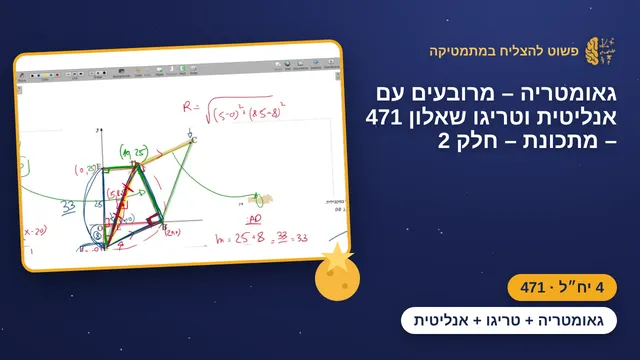
גאומטריה – מרובעים עם אנליטית וטריגו שאלון 471 – מתכונת – חלק 2 גאומטריה – מרובעים עם אנליטית וטריגו שאלון 471 – מתכונת – חלק 1
גאומטריה – מרובעים עם אנליטית וטריגו שאלון 471 – מתכונת – חלק 1 תרגיל בגרות קיץ 2025 שאלון 471 מעגל נדיר ביופיו
תרגיל בגרות קיץ 2025 שאלון 471 מעגל נדיר ביופיו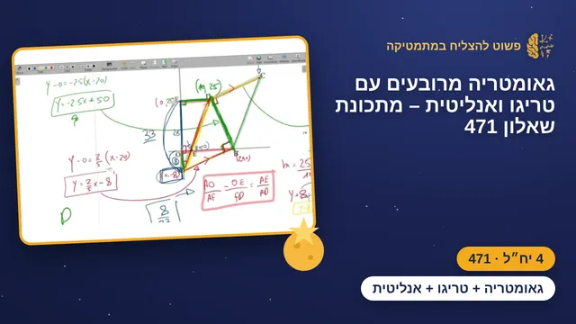
גאומטריה מרובעים עם טריגו ואנליטית – מתכונת שאלון 471 גאומטריה מעגל עם טריגו ואנליטית – מתכונת שאלון 471
גאומטריה מעגל עם טריגו ואנליטית – מתכונת שאלון 471 מעגל עם אנליטית וטריגו שאלת בגרות 471
מעגל עם אנליטית וטריגו שאלת בגרות 471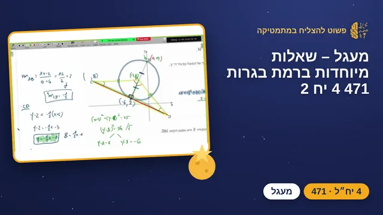
מעגל – שאלות מיוחדות ברמת בגרות 471 4 יח 2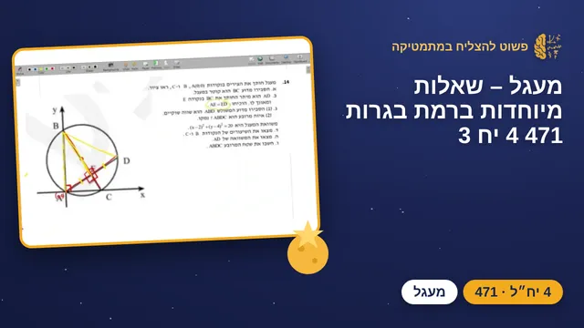
מעגל – שאלות מיוחדות ברמת בגרות 471 4 יח 3 מעגל – שאלות מיוחדות ברמת בגרות 471 4 יח 1
מעגל – שאלות מיוחדות ברמת בגרות 471 4 יח 1 מעגל – שאלות מיוחדות ברמת בגרות 471 4 יח 4
מעגל – שאלות מיוחדות ברמת בגרות 471 4 יח 4 גאומטריה עם טריגו ואנליטית שאלת בגרות 471 שאלון חדש 4 יח
גאומטריה עם טריגו ואנליטית שאלת בגרות 471 שאלון חדש 4 יח שאלת בגרות גאומטריה עם טריגו – מקבילית ודמיון משולשים 471 4 יח
שאלת בגרות גאומטריה עם טריגו – מקבילית ודמיון משולשים 471 4 יח שאלון 471 גאומטריה עם טריגו ואנליטית שאלת בגרות – כולל דמיון משולשים
שאלון 471 גאומטריה עם טריגו ואנליטית שאלת בגרות – כולל דמיון משולשים שאלת בגרות 471 – גאומטריה עם טריגו ואנליטית, שאלה 4
שאלת בגרות 471 – גאומטריה עם טריגו ואנליטית, שאלה 4 אנליטית עם גאומטריה וטריגו שאלון 471 – שאלת בגרות פתורה מלאה
אנליטית עם גאומטריה וטריגו שאלון 471 – שאלת בגרות פתורה מלאה שאלות בגרות 471 אנליטית עם גאומטריה וטריגו – איך לפתור תרגיל 1
שאלות בגרות 471 אנליטית עם גאומטריה וטריגו – איך לפתור תרגיל 1 שאלות בגרות 471 אנליטית עם גאומטריה וטריגו – איך לפתור תרגיל 2
שאלות בגרות 471 אנליטית עם גאומטריה וטריגו – איך לפתור תרגיל 2 גאומטריה אנליטית עם טריגו וגאומטריה אוקלידית שאלת בגרות 471 חורף 2024
גאומטריה אנליטית עם טריגו וגאומטריה אוקלידית שאלת בגרות 471 חורף 2024 אנליטית עם גאומטריה וטריגו שאלות בגרות 471 4 יח 1
אנליטית עם גאומטריה וטריגו שאלות בגרות 471 4 יח 1 אנליטית עם גאומטריה וטריגו שאלות בגרות 471 4 יח 2
אנליטית עם גאומטריה וטריגו שאלות בגרות 471 4 יח 2 תרגילי מעגל עם טריגו ואנליטית 4 יח 471 2
תרגילי מעגל עם טריגו ואנליטית 4 יח 471 2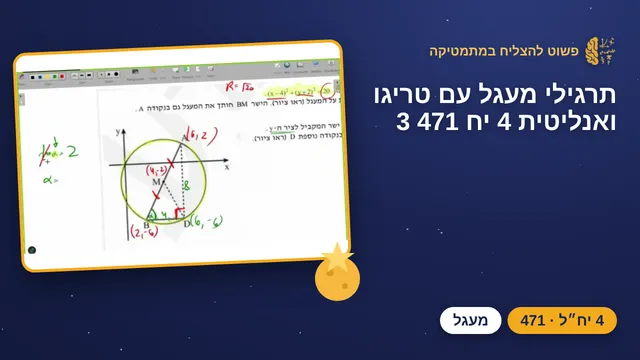
תרגילי מעגל עם טריגו ואנליטית 4 יח 471 3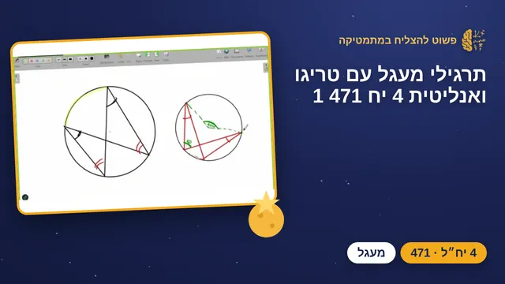
תרגילי מעגל עם טריגו ואנליטית 4 יח 471 1 אנליטית מרובעים 471מעגל עם אנליטית, טריגו ומשיקים 471 תרגיל טיל
אנליטית מרובעים 471מעגל עם אנליטית, טריגו ומשיקים 471 תרגיל טיל תרגילי מעגל כולל אנליטית וטריגונומטריה עם משפטי מעגל 471 1
תרגילי מעגל כולל אנליטית וטריגונומטריה עם משפטי מעגל 471 1 תרגילי מעגל כולל אנליטית וטריגונומטריה עם משפטי מעגל 471 2
תרגילי מעגל כולל אנליטית וטריגונומטריה עם משפטי מעגל 471 2 תרגילי מעגל כולל אנליטית וטריגונומטריה עם משפטי מעגל 471 3
תרגילי מעגל כולל אנליטית וטריגונומטריה עם משפטי מעגל 471 3 מעגל משיק לצירים שאלון 471 4 יח
מעגל משיק לצירים שאלון 471 4 יח תרגיל מעגל כולל דמיון משולשים שאלון 471
תרגיל מעגל כולל דמיון משולשים שאלון 471 הסבר משוואת מעגל 471
הסבר משוואת מעגל 471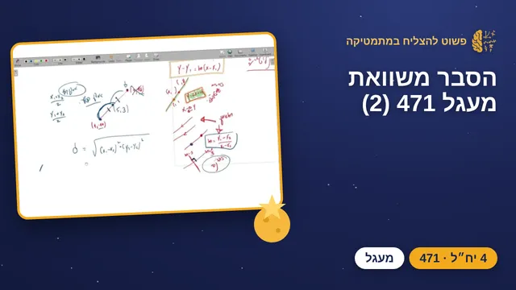
הסבר משוואת מעגל 471 (2)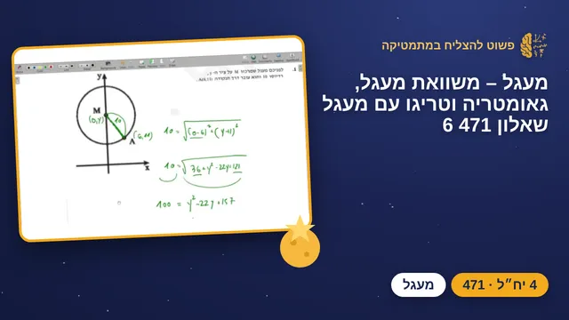
מעגל – משוואת מעגל, גאומטריה וטריגו עם מעגל שאלון 471 6 מעגל – משוואת מעגל, גאומטריה וטריגו עם מעגל שאלון 471 9
מעגל – משוואת מעגל, גאומטריה וטריגו עם מעגל שאלון 471 9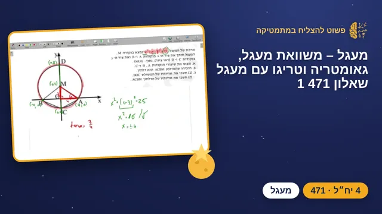
מעגל – משוואת מעגל, גאומטריה וטריגו עם מעגל שאלון 471 1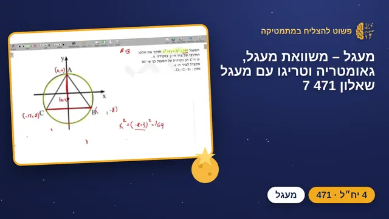
מעגל – משוואת מעגל, גאומטריה וטריגו עם מעגל שאלון 471 7 מעגל – משוואת מעגל, גאומטריה וטריגו עם מעגל שאלון 471 3
מעגל – משוואת מעגל, גאומטריה וטריגו עם מעגל שאלון 471 3 מעגל – משוואת מעגל, גאומטריה וטריגו עם מעגל שאלון 471 5
מעגל – משוואת מעגל, גאומטריה וטריגו עם מעגל שאלון 471 5 מעגל – משוואת מעגל, גאומטריה וטריגו עם מעגל שאלון 471 4
מעגל – משוואת מעגל, גאומטריה וטריגו עם מעגל שאלון 471 4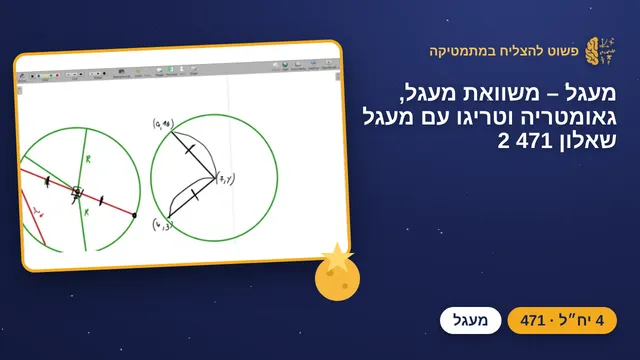
מעגל – משוואת מעגל, גאומטריה וטריגו עם מעגל שאלון 471 2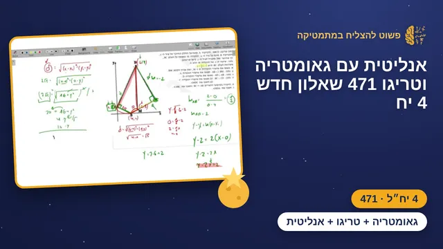
אנליטית עם גאומטריה וטריגו 471 שאלון חדש 4 יח אנליטית עם טריגו וגאומטריה שאלון 471 4 יח
אנליטית עם טריגו וגאומטריה שאלון 471 4 יח שאלון 471 גאומטריה עם טריגונומטריה ואנליטית 4 יח שאלון חדש
שאלון 471 גאומטריה עם טריגונומטריה ואנליטית 4 יח שאלון חדש אנליטית עם טריגו 471 שאלון חדש 4 יח
אנליטית עם טריגו 471 שאלון חדש 4 יח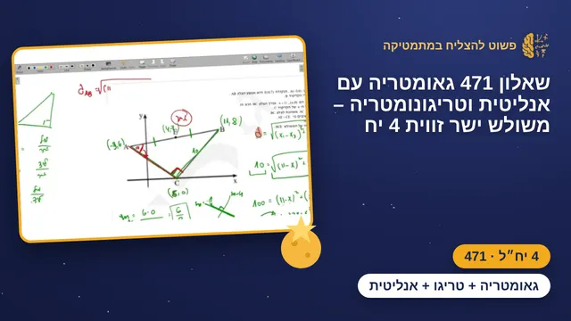
שאלון 471 גאומטריה עם אנליטית וטריגונומטריה – משולש ישר זווית 4 יח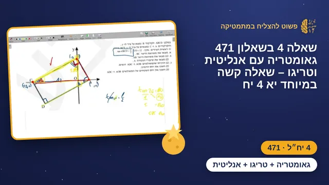
שאלה 4 בשאלון 471 גאומטריה עם אנליטית וטריגו – שאלה קשה במיוחד יא 4 יח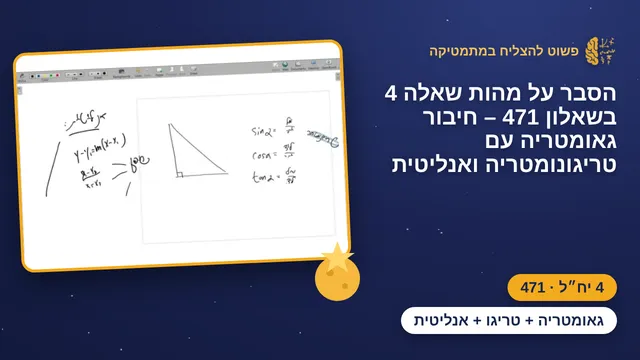
הסבר על מהות שאלה 4 בשאלון 471 – חיבור גאומטריה עם טריגונומטריה ואנליטית אנליטית עם טריגונומטריה 471 שאלון חדש 4 יח כיתה יא
אנליטית עם טריגונומטריה 471 שאלון חדש 4 יח כיתה יא גאומטריה דמיון משולשים תרגילים שווים ממש כיתה יא 471 4 יח
גאומטריה דמיון משולשים תרגילים שווים ממש כיתה יא 471 4 יח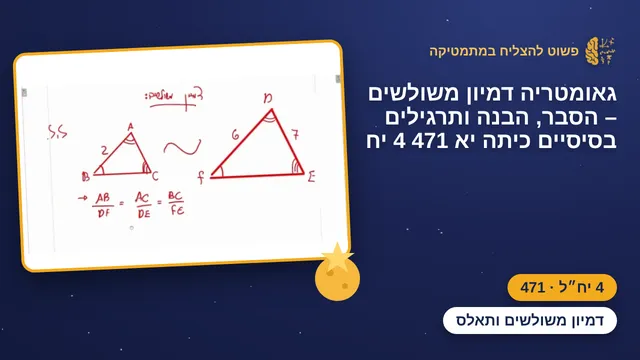
גאומטריה דמיון משולשים – הסבר, הבנה ותרגילים בסיסיים כיתה יא 471 4 יחשאלון 471 גאומטריה עם טריגו ואנליטית – דלתון וחפיפת משולשיםשאלון 471 שאלה 4 – גאומטריה עם אנליטית וטריגו: ריבוע ודמיון משולשים אנליטית עם גאומטריה 471 השאלון החדש – שאלה פשוטה וטובה
אנליטית עם גאומטריה 471 השאלון החדש – שאלה פשוטה וטובה 471 שאלת גאומטריה עם טריגו ואנליטית כולל קטע אמצעיםאנליטית עם גאומטריה וטריגו שאלון חדש 471 – תרגיל מסכם את כל החומר
471 שאלת גאומטריה עם טריגו ואנליטית כולל קטע אמצעיםאנליטית עם גאומטריה וטריגו שאלון חדש 471 – תרגיל מסכם את כל החומר גאומטריה עם טריגו ואנליטית 471 – רעיון ב-5 דקות 1
גאומטריה עם טריגו ואנליטית 471 – רעיון ב-5 דקות 1 גאומטריה עם טריגו ואנליטית 471 – רעיון ב-5 דקות 2
גאומטריה עם טריגו ואנליטית 471 – רעיון ב-5 דקות 2 משולש ישר זווית בגאומטריה אנליטית 471 כיתה י – שאלות פתורות
משולש ישר זווית בגאומטריה אנליטית 471 כיתה י – שאלות פתורות שטח משולש בגאומטריה אנליטית 471 כיתה י – שאלות פתורות
שטח משולש בגאומטריה אנליטית 471 כיתה י – שאלות פתורותפרק ג — חשבון דיפרנציאלי ואינטגרלי פולינום, שבר, שורש, קיצון, אינטגרלים
 חקירת פונקציה רציונלית שאלון 471 – מתכונת
חקירת פונקציה רציונלית שאלון 471 – מתכונת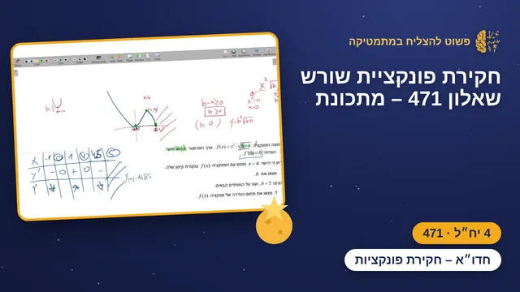
חקירת פונקציית שורש שאלון 471 – מתכונת בעיית קיצון שאלון 471 – מתכונת
בעיית קיצון שאלון 471 – מתכונת חקירת שבר בגרות 4 יח 471
חקירת שבר בגרות 4 יח 471 חקירת שבר שאלות בגרות 471 4 יח 1
חקירת שבר שאלות בגרות 471 4 יח 1 חקירת שבר שאלות בגרות 471 4 יח 2
חקירת שבר שאלות בגרות 471 4 יח 2 חקירת שבר – מתכונת שאלון 471
חקירת שבר – מתכונת שאלון 471 בעיית קיצון – מתכונת שאלון 471
בעיית קיצון – מתכונת שאלון 471 חקירת שורש – מתכונת שאלון 471
חקירת שורש – מתכונת שאלון 471 פונקציית שורש שאלת בגרות 471
פונקציית שורש שאלת בגרות 471 פונקציית שורש שאלת בגרות 471 פצצה
פונקציית שורש שאלת בגרות 471 פצצה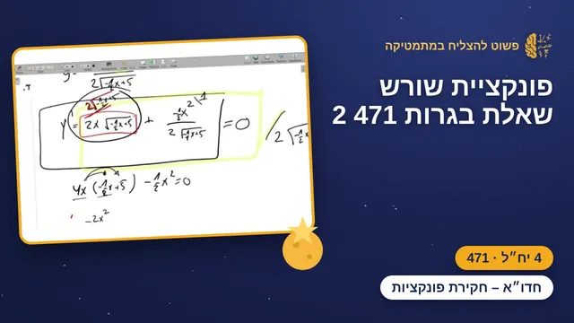
פונקציית שורש שאלת בגרות 471 2 חקירת פונקציה רציונלית (שבר) שאלת בגרות 471
חקירת פונקציה רציונלית (שבר) שאלת בגרות 471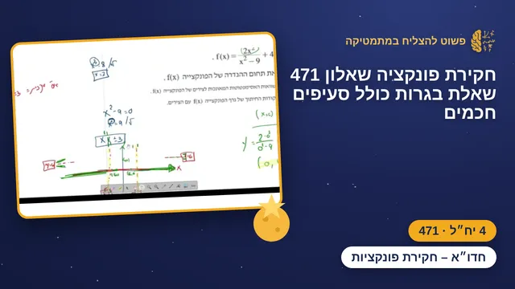
חקירת פונקציה שאלון 471 שאלת בגרות כולל סעיפים חכמים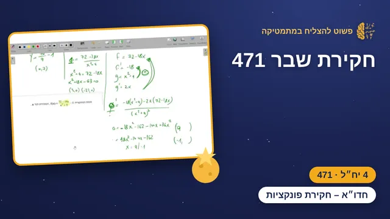
חקירת שבר 471 בעיות קיצון גאומטריה שאלון 471 2
בעיות קיצון גאומטריה שאלון 471 2 בעיות קיצון גאומטריה שאלון 471 1
בעיות קיצון גאומטריה שאלון 471 1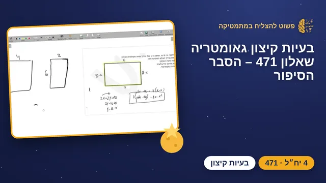
בעיות קיצון גאומטריה שאלון 471 – הסבר הסיפור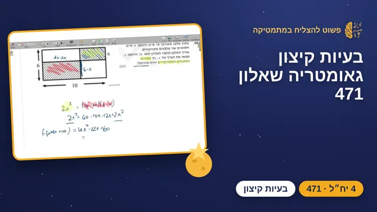
בעיות קיצון גאומטריה שאלון 471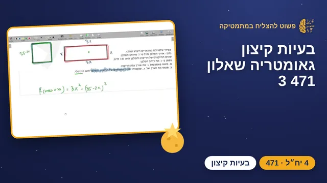
בעיות קיצון גאומטריה שאלון 471 3 חקירת פונקציית שבר עם אינטגרל של נגזרת שאלון 471 4 יח
חקירת פונקציית שבר עם אינטגרל של נגזרת שאלון 471 4 יח חקירת פונקציית שבר עם אינטגרל של נגזרת שאלון 471 4 יח 2
חקירת פונקציית שבר עם אינטגרל של נגזרת שאלון 471 4 יח 2 הסבר אינטגרלים – שטחים 471
הסבר אינטגרלים – שטחים 471 פונקציית שורש שאלה מדהימה 471
פונקציית שורש שאלה מדהימה 471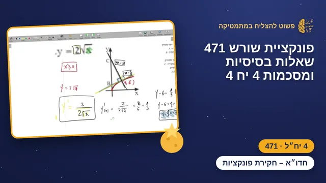
פונקציית שורש 471 שאלות בסיסיות ומסכמות 4 יח 4 פונקציית שורש 471 שאלות בסיסיות ומסכמות 4 יח 3
פונקציית שורש 471 שאלות בסיסיות ומסכמות 4 יח 3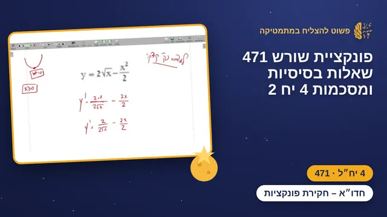
פונקציית שורש 471 שאלות בסיסיות ומסכמות 4 יח 2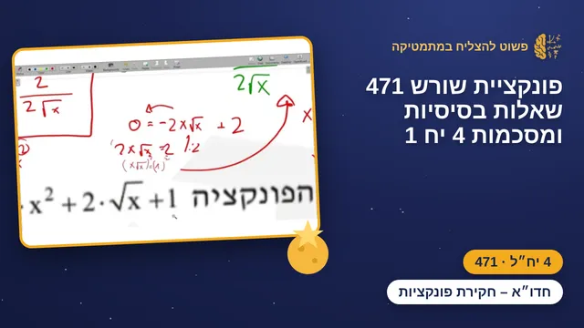
פונקציית שורש 471 שאלות בסיסיות ומסכמות 4 יח 1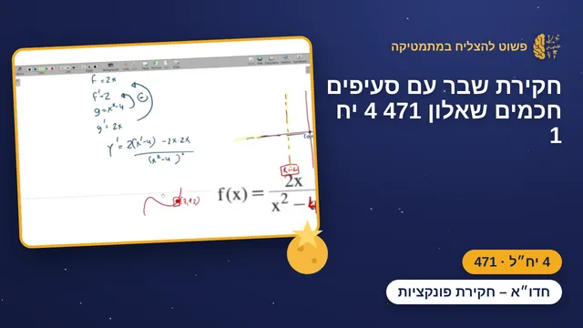
חקירת שבר עם סעיפים חכמים שאלון 471 4 יח 1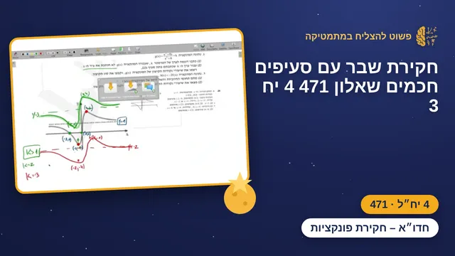
חקירת שבר עם סעיפים חכמים שאלון 471 4 יח 3 חקירת שבר עם סעיפים חכמים שאלון 471 4 יח 2
חקירת שבר עם סעיפים חכמים שאלון 471 4 יח 2 סעיף חכם – דיפרנציאלי 4 יח 471
סעיף חכם – דיפרנציאלי 4 יח 471 איך מוצאים פרמטר מנתון קשר פונקציה-נגזרת שאלון 471
איך מוצאים פרמטר מנתון קשר פונקציה-נגזרת שאלון 471 חקירת פונקציית שבר רציונלית שאלון 471 – מההתחלה עד הסוף כולל אסימפטוטות
חקירת פונקציית שבר רציונלית שאלון 471 – מההתחלה עד הסוף כולל אסימפטוטות הסבר משמעות פונקציה ונגזרת – הבסיס של הבסיס שאלון 471
הסבר משמעות פונקציה ונגזרת – הבסיס של הבסיס שאלון 471 חקירת שבר עם סעיפים חכמים, הזזות וקשר פונקציה-נגזרת שאלון 471 1
חקירת שבר עם סעיפים חכמים, הזזות וקשר פונקציה-נגזרת שאלון 471 1 חקירת שבר עם סעיפים חכמים, הזזות וקשר פונקציה-נגזרת שאלון 471 2
חקירת שבר עם סעיפים חכמים, הזזות וקשר פונקציה-נגזרת שאלון 471 2 פונקציית שבר עם פרמטר כולל סעיפים חכמים 471 4 יח
פונקציית שבר עם פרמטר כולל סעיפים חכמים 471 4 יח אסימפטוטה אופקית – הסבר נדיר ביותר 471
אסימפטוטה אופקית – הסבר נדיר ביותר 471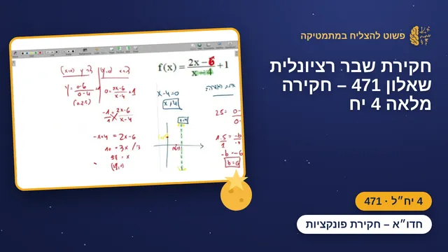
חקירת שבר רציונלית שאלון 471 – חקירה מלאה 4 יח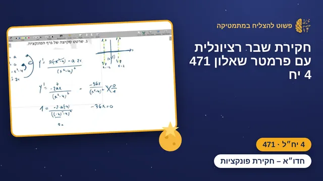
חקירת שבר רציונלית עם פרמטר שאלון 471 4 יחחקירה מלאה של פונקציה רציונלית (מנה) שאלון 471 571 – מהבסיס עד הסוף חקירת שבר עם סעיפים חכמים – שאלה פצצה 471 571חקירת שורש עם נעלם וחקירה מלאה עם סעיפים חכמים 471 571חקירת פולינום עם מציאת נעלם וסעיף מחשבה כיתה י 471 4 יח
חקירת שבר עם סעיפים חכמים – שאלה פצצה 471 571חקירת שורש עם נעלם וחקירה מלאה עם סעיפים חכמים 471 571חקירת פולינום עם מציאת נעלם וסעיף מחשבה כיתה י 471 4 יח חקירת פולינום עם הבנה ומחשבה – לפתוח תודעה 471פונקציית שבר רציונלית – שאלה בסיסית על מציאת שיפוע 471-571פונקציה מורכבת – שאלה להתחלה, צעדים ראשונים 471פונקציה מורכבת – הבסיס: איך גוזרים 471
חקירת פולינום עם הבנה ומחשבה – לפתוח תודעה 471פונקציית שבר רציונלית – שאלה בסיסית על מציאת שיפוע 471-571פונקציה מורכבת – שאלה להתחלה, צעדים ראשונים 471פונקציה מורכבת – הבסיס: איך גוזרים 471 פונקציה מורכבת – הבסיס: פתרון משוואה, זוגית ואי-זוגית 471
פונקציה מורכבת – הבסיס: פתרון משוואה, זוגית ואי-זוגית 471 קשר בין פונקציה לנגזרת – מהות ומשמעות, סרטון חובה 471 כיתה י (תרגילים)
קשר בין פונקציה לנגזרת – מהות ומשמעות, סרטון חובה 471 כיתה י (תרגילים) קשר בין פונקציה לנגזרת – מהות ומשמעות, סרטון חובה 471 כיתה י
קשר בין פונקציה לנגזרת – מהות ומשמעות, סרטון חובה 471 כיתה י קשר בין פונקציה לנגזרת – מהות ומשמעות 471 כיתה י (תרגילים 2)פונקציית פולינום – שאלה פשוטה ומשמעותית 471 4 יח
קשר בין פונקציה לנגזרת – מהות ומשמעות 471 כיתה י (תרגילים 2)פונקציית פולינום – שאלה פשוטה ומשמעותית 471 4 יח פונקציה מורכבת – פתרון משוואות, שיפועים ומשוואת משיק 481 471 2פונקציה מורכבת – פתרון משוואות, שיפועים ומשוואת משיק 481 471 1
פונקציה מורכבת – פתרון משוואות, שיפועים ומשוואת משיק 481 471 2פונקציה מורכבת – פתרון משוואות, שיפועים ומשוואת משיק 481 471 1 פונקציה זוגית ואי-זוגית כיתה י 471
פונקציה זוגית ואי-זוגית כיתה י 471 כיתה י פונקציית חזקה 471 – תרגיל פתור
כיתה י פונקציית חזקה 471 – תרגיל פתור עמ' 62 שאלה 8 (יואל גבע חלק ב) 471 כיתה י – פונקציית חזקה
עמ' 62 שאלה 8 (יואל גבע חלק ב) 471 כיתה י – פונקציית חזקה עמ' 70 שאלה 18 (יואל גבע חלק ב) 471 כיתה י – פונקציית פולינום
עמ' 70 שאלה 18 (יואל גבע חלק ב) 471 כיתה י – פונקציית פולינום